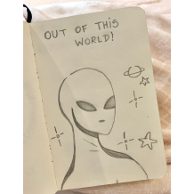
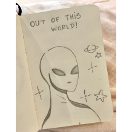
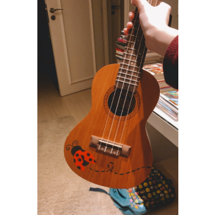
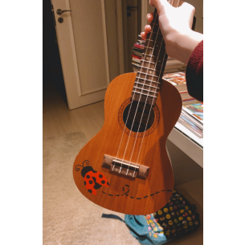

Comecei a desenhar por lazer para passar o tempo, normalmente usando imagens do Pinterest de referências, a lápis em um caderno. Durante o início da quarentena fui me aperfeiçoando com pintura com lápis de cor e desenhos em cadernos maiores
 

Tentei me arriscar na aquarela também durante a pandemia, mas não me interessou muito. Gosto de pintar desenhos mais estáticos e com cores sólidas, então senti que não era muito minha praia... Mas aqui estão minhas aventuras pela arte da aquarela:
Meus pais e amigos começaram a me pedir desenhos como presentes. Estes abaixo foram, em ordem: os cartões de aniversário do meu pai e da minha mãe, e um desenho que um amigo meu me pediu pra reproduzir (Obs.: ele usa esse desenho como plano de fundo de celular até hoje, 6 anos depois)
Mais fundo na quarentena, comecei a praticar desenhos digitais. Uma das trends entre os youtubers de desenho era fazer um design em um modelo em branco de All Star. Testei um modelo para liberar a criatividade, minhas amigas gostaram e me incentivaram a fazer mais, entâo em uma madrugada fiz uma suposta coleção das Meninas Superpoderosas usando o ProCreate:

E por fim, quando comprei um ukulele, vi algumas fotos de instrumentos personalizados e decidi estilizar o meu. Houveram vários rascunhos de ideias com chamas de fogo, círculos coloridos e etc, mas a ideia vencedora foi esta:
 
